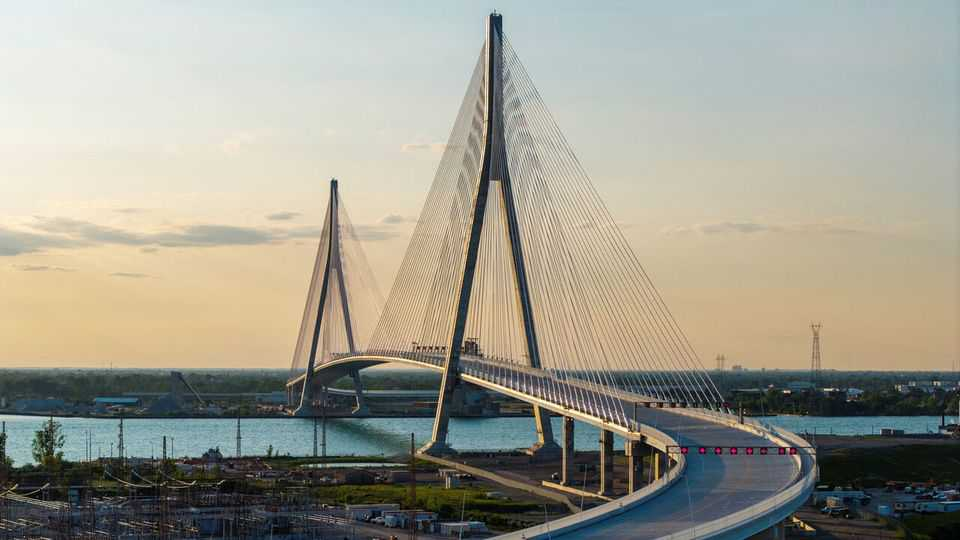

How to turn solutions into problems
Lessons from a fight over a bridge between America and Canada

Jul 30th 2026
In hockey, to achieve a Gordie Howe hat-trick is to score a goal, record an assist and get into a fight, all in a single game. Over some 14 years, Canada and America endured a similar combination of glory, co-operation and conflict in building a bridge named after the Canadian legend.
The fight happened to break out when Donald Trump entered the arena. Earlier this year the president lambasted Canada and threatened to block the bridge, delaying it by months. It is one of myriad fights that Mr Trump has picked in his second term, exerting pressure on everything from universities to law firms to trading partners such as Canada that, until recently, would have been considered America’s closest allies. The Gordie Howe opened, at last, on July 27th. But, a year and a half into Mr Trump’s campaign of skirmishes, the bridge is a neat parable of how trifling some of these efforts have proved to be.
It should instead have been a case study in mutual benefit. For decades there had been only one bridge, the privately owned Ambassador, spanning the stretch of the Detroit river that separates the city from Windsor, Ontario. The bridge has been among the busiest in the Canadian-American trade corridor, handling about a quarter of the countries’ freight trade by lorry. So in 2012, Canada and Michigan agreed to co-own a second bridge, to ease traffic and charge cheaper tolls. Canada would pay for construction and keep toll profits until it recouped its costs. “This is one of those situations where you should just be happy,” said Rick Snyder, Michigan’s Republican governor at the time.
After covid-related delays, the bridge was slated to open early this year. Then, in February, Mr Trump threatened to block the opening until America received a 50% ownership stake and Canada “compensated” its neighbour for alleged trade violations. More narrowly, he also appears to have been lobbied by Matthew Moroun, who owns the Ambassador bridge and who had given $1m to a MAGA super political-action committee. Democrats in Congress launched an inquiry, to which Mr Moroun did not respond.
A planned opening in June was cancelled. In mid-July the countries announced they had struck a new “agreement in principle”. Canada would give an American fund 50% of net profits, minus undefined “operating costs”, over 15 years. But any profits will take years to materialise. The new deal is “a face-saving exit” for the Trump administration, says Christopher Sands of Johns Hopkins University.
It is unclear what has been gained from this spat. It imposed real costs on companies seeking transport between Canada and America, as well as on Canada’s bridge authority, of $6m-7m a week since February, according to the Anderson Economic Group, a consultancy. Talks over a renewed trade deal with Canada continue, with Mr Trump using the threat of new tariffs to try to win concessions. But the bridge fight is over, and may not make Mark Carney, Canada’s prime minister, more inclined to accept Mr Trump’s terms on trade. Vexed Canadians have taken an “elbows up” approach to American bullying. It was Howe’s preferred tactic.■
Stay on top of American politics with The US in brief, our daily newsletter with fast analysis of the most important political news, and Checks and Balance, a weekly note that examines the state of American democracy and the issues that matter to voters.